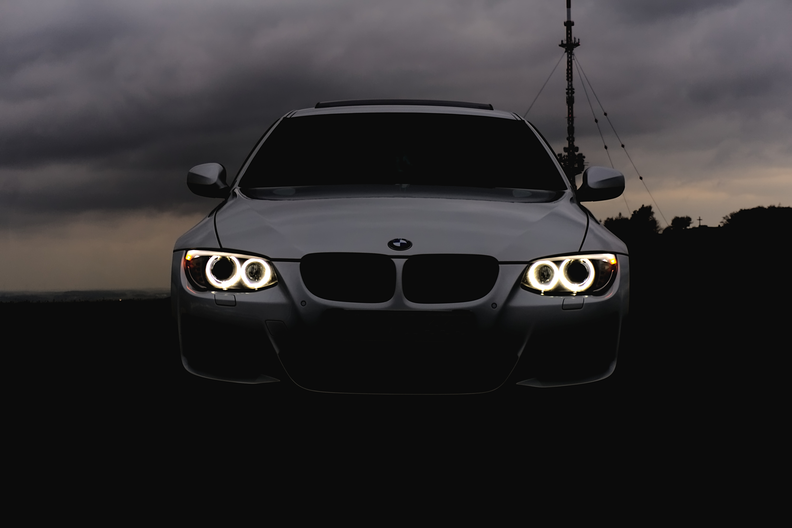

Dicas de Fotografia
Descubra como capturar a essência das fotos com algumas dicas profissionais.
Dicas Essenciais
- Escolha a Hora Certa: A luz natural ao amanhecer e ao entardecer é perfeita para criar contrastes e sombras suaves.
- Use um Tripé:Um tripé é essencial para garantir a nitidez em fotos de longa exposição, especialmente ao fotografar rios.
- Composição: Experimente as regras dos terços para criar imagens equilibradas e visualmente atraentes.
- Explorar ângulos: Não tenha medo de experimentar ângulos diferentes para obter perspectivas únicas.